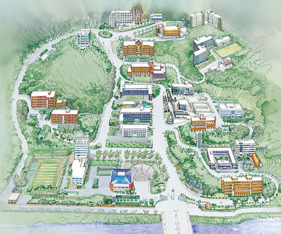

건물 번호를 누르면 그 건물 안팎의 장소가 아래에 나와요. 학교 공식 캠퍼스지도 위에 번호를 얹었어요. 두 손가락으로 벌리면 확대되고, 두 번 탭해도 돼요.
번호를 눌러 보세요

오르막 요령. 인문사회관(E14)이 캠퍼스에서 가장 높은 곳이에요. 건축관(E12) 엘리베이터를 타고 3층에서 내려 가거나 건설환경관(E13) 엘리베이터를 쓰면 오르막이 줄어요. 학기 중 평일에는 999번 버스가 인문사회관 앞까지 올라와요.
장소 모음
생활 시설 목록
편의점 · 프린트 · 세탁방 · 택배 · 원룸
지도와 건물 번호·이름은 학교 공식 캠퍼스지도(ut.ac.kr)를 따랐어요. 장소 설명은 학생 제보(2026년 10월 초 확인)이고, 시설 운영은 수업, 행사, 안전관리에 따라 바뀔 수 있어요. 공식 지도 이미지가 574×479 한 가지 크기뿐이라 확대하면 흐려 보여요.
공강 · 수강신청 · 운영시간
운영시간
지금 열려 있는 곳을 먼저 확인하세요. 내 수업 시간표는 맨 오른쪽 탭에서 직접 만들 수 있어요.
--:--
지금 열려 있는 곳
학기 중 기준이에요. 방학에는 달라져요. 요일이 적혀 있지 않은 곳은 제보에 요일이 없었던 곳이라 매일 같은 시간으로 계산해요.
수강신청 · 학교생활 요령
교양 먼저 잡는 법
경쟁이 가장 센 교양을 첫 클릭으로 잡아요.
장바구니에 1순위 바로 아래, 같은 시간대의 차선책을 붙여 둬요.
유선 PC를 메인으로 쓰고, 휴대폰은 로그인만 해 둔 백업으로 둬요. 서버 시간을 맞춰 두세요.
못 잡은 과목은 수강정정 첫날 아침에 빈자리가 자주 남아요.
장바구니와 학점 한도
장바구니는 내 수강학점 안에서만 담기고, 관심과목은 학점 제한 없이 담을 수 있어요.
장바구니에 담아도 끝이 아니에요. 최종 수강신청 기간에 '신청'을 눌러야 확정돼요.
2026년 2학기부터는 가장 최근에 로그인한 기기 1대에서만 신청돼요.
학점 한도는 학기당 19학점이고, 직전 학기 평점 4.0 이상이면 23학점이에요.
예비수강신청 기간에 실전처럼 미리 등록해 두면 본 신청이 빨라요. 필수 전공과 교양은 통합정보시스템에서 확인하고, 필요하면 학과사무실이나 지도교수님과 상담하세요.
수강 철회
개강 후 7주 안의 정해진 기간(3월 말, 9월 말)에 3과목까지 철회할 수 있어요.
철회해도 등록금은 돌려받지 못해요.
천원의 아침밥
매 학기 열려요. 참여 방법과 기간은 통합정보시스템 행사 공지사항에서 확인해요.
PAYCO 앱으로 신청해요. 오전 7시 선착순 200개이고, 홀수 달에는 학식, 짝수 달에는 편의점 도시락으로 바뀐다는 제보가 있어요.
받는 곳이 학식당이라는 제보와 종합강의동 CU라는 제보가 있어요. 공지사항에서 확인하세요.
학식 메뉴 확인하는 법
학교 홈페이지 식단안내, 또는 학교 앱 '한국교통대학교 스마트모바일'의 대학생활 메뉴에서 봐요.
생활관 식단은 생활관 홈페이지의 오늘의 식단 게시판에 올라와요.
생활관 벌점 안 쌓는 법
점호는 23:30이에요. 귀사는 01:00 전까지 하고, 01:00~04:00에는 출입이 통제돼요.
벌점 8점이면 다음 학기 입사가 안 되고, 10점이면 퇴사예요.
음주와 실내 흡연은 바로 10점이에요. 전열기를 쓰거나 출입카드를 빌려주는 것도 금지예요.
동아리 하나 소개
사랑방은 역사가 40년 된 연극 동아리예요. 배우뿐 아니라 조명, 음향, 무대 제작 팀이 있고, 전문 지식은 필요 없어요. 진지한 마음과 시간을 내면 돼요.
학생 제보를 정리한 내용이에요(2026년 10월 초 확인). 학사 일정과 학점 규정은 해마다 바뀔 수 있어요. 교시별 수업 시각은 제보에 없어 시간 단위 칸으로 만들었어요.
내 수업 · 내 공강
개인 시간표
수업을 직접 입력해서 나만의 시간표를 만들어요. 이 기기의 브라우저에만 저장되고, 다른 기기나 다른 사람에게는 보이지 않아요.
이번 학기
빈 칸을 누르면 그 요일과 시간으로 수업 추가 창이 열려요. 강의실에 E14, W5 같은 건물번호를 쓰면 건물 이름이 붙어요.
과목 목록
대학로 · 시내 · 학식
맛집·카페
학생들이 직접 적어 낸 가게예요. 같은 가게를 여러 명이 적으면 추천 수가 올라가요. 가격은 제보에 있는 것만 실었어요.
가장 많이 추천받은 곳
전체 목록
저녁 이후 · 놀 곳
술집 · PC방 · 노래방
학생 제보를 정리한 내용이에요(2026년 10월 초 확인). 가격 앞의 '평균'은 제보한 사람이 평균값으로 적은 것이고, '리뷰'는 온라인 리뷰에서 가져온 값이에요. 가격과 영업시간은 바뀌니 가기 전에 지도에서 확인하세요. 최저가는 제보된 메뉴 중 가장 싼 값이라 대표 메뉴 가격과 다를 수 있어요.
버스 · 셔틀 · 택시
교통
충주는 버스가 적고 시간이 어긋나는 일이 많아요. 아래 숫자가 학교 안까지 들어오는 번호예요.
999학교 ⇄ 충주역 · 터미널학기 중 평일 · 첫차 08:15 · 교내 정류장 4곳
700대학순환 → 연수동 번화가하루 4회 · 주말·공휴일·방학 없음
셔틀충주역·터미널 ⇄ 캠퍼스 (무료)학기 중만 · 2학기 9/1~12/21
999시내·충주역·터미널
학교와 시내를 가장 짧게 잇는 노선이에요. 교통대 정문과 기숙사, 인문사회관 앞까지 들어와요.
한국교통대
교통대 정문
달천
건대사거리
충주역
터미널
교내 정류장은 인문사회대 앞, 대학본부 앞, 체육관 앞, 대학로 쪽이에요.
학기 중 평일만 다녀요. 토·일·공휴일·방학에는 안 다녀요.
목·금요일에는 본가에 가는 학생이 많아서 다른 요일보다 매우 붐벼요.
시간표는 교내 모든 정류장에 붙어 있어요. 에브리타임에서 '999'를 검색하면 시간표가 나오니 저장해 두세요.
999번이 안 다니는 때는 농협 하나로마트 맞은편 정류장에서 터미널·시내로 가는 100번대를 타요.
통학생은 100번대로 등교한 뒤 높은 곳에 있는 학과라면 터미널에서 999번으로 갈아타면 교내 곳곳에 내려 줘요.
100정문까지 들르는 시내버스
999번 말고도 오전에 주덕 가는 노선이 교통대 정문까지 들렀다 유턴해요. 터미널 출발 기준 시각이에요.
106번은 터미널 방향으로 자전거길 정류장에 하루 3번(10:50, 15:04, 19:04) 서요. 지도에 안 떠도 손을 흔들면 세워 준다는 댓글이 있어요.
터미널을 넘어 학교 – 터미널 – 호암동으로 이어지는 노선도 보통 100번대예요. 하나로마트 맞은편이나 정문에서 세워 줘요.
신연수동은 터미널이나 시내에서 내려 300번대로 갈아타요. 360번대는 신연수동에 가지 않아요. 300번대는 서는 정류장이 따로 있으니 노선표를 확인하세요.
시간표는 바뀔 수 있어요. 충주시 버스 정보나 카카오맵으로 다시 확인하세요. 요일 조건은 제보에 없었어요.
700대학순환 (연수동 가는 길)
2024-09-02에 생긴 대학순환 노선이에요. 하루 4회 다니고, 시내 번화가(연수동)로 바로 갈 때 써요.
교통대
건국대
풍경채
영은교회
신원8차
연수초교사거리
한스타워
터미널
건대정문
교통대 (순환)
토·일·공휴일·방학에는 안 다녀요. 시간은 교내 정류장에 붙은 700번 시간표를 보세요.
콜대소원면 콜버스
2024년 6월에 생긴 호출형 버스예요. 현금 1,000원, 카드 900원.
오전에는 정해진 길로 다니고, 오후에는 예약해서 불러요.
콜버스와 시내버스는 40분 안에 2번까지 무료로 환승돼요. 시내버스 일반 요금은 1,700원이에요.